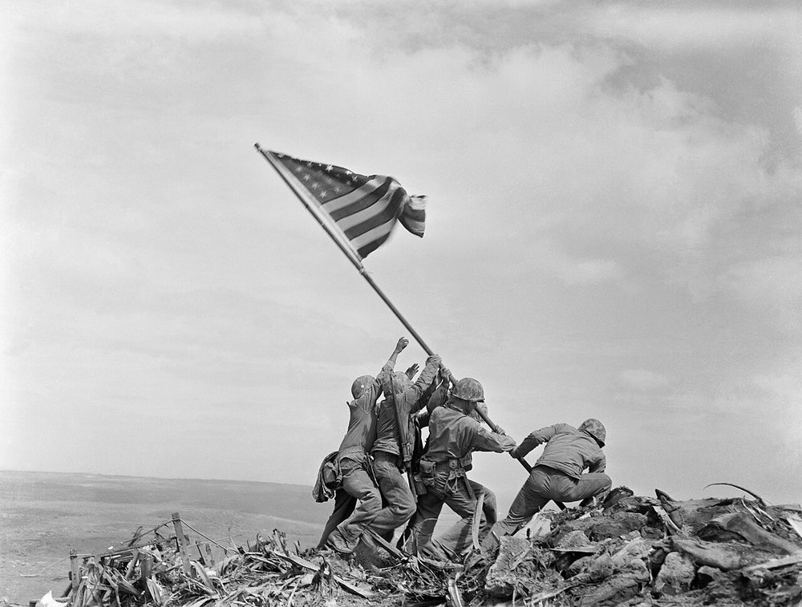

Raising the Flag on Iwo Jima
Joe Rosenthal · 23 February 1945 · Photograph
In copyright. Look and learn: shown for study, not for download.
This was the second flag raised on Mount Suribachi on 23 February 1945; a smaller one had gone up that morning and was replaced with a 96-by-56-inch flag taken from a landing ship. Joe Rosenthal of the Associated Press, thirty-three, had been rejected by the Army as a photographer for poor eyesight, and he was carrying a Speed Graphic. His film went to Guam to be developed, and the picture was on the wire within seventeen and a half hours. Three of the six Marines in it were killed later in the battle.